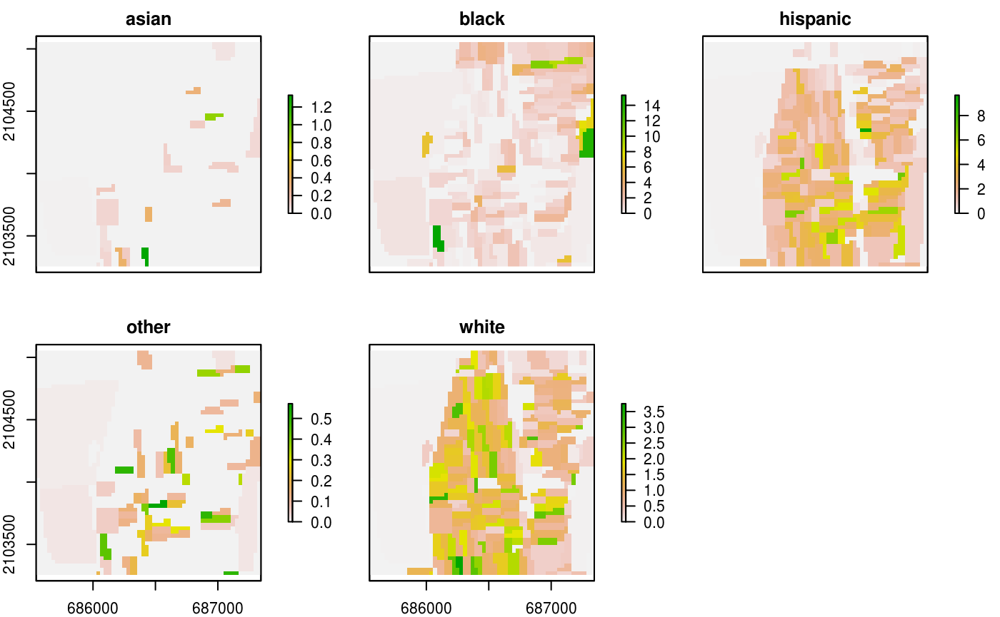

workflow.Rmdlibrary(raceland)
library(raster)
#> Loading required package: sp
library(sf)
#> Linking to GEOS 3.5.0, GDAL 2.2.2, PROJ 4.8.0
# library(tmap)race_raster
#> class : RasterBrick
#> dimensions : 60, 60, 3600, 5 (nrow, ncol, ncell, nlayers)
#> resolution : 30, 30 (x, y)
#> extent : 685545, 687345, 2103255, 2105055 (xmin, xmax, ymin, ymax)
#> crs : +proj=aea +lat_1=29.5 +lat_2=45.5 +lat_0=23 +lon_0=-96 +x_0=0 +y_0=0 +ellps=GRS80 +towgs84=0,0,0,0,0,0,0 +units=m +no_defs
#> source : memory
#> names : asian, black, hispanic, other, white
#> min values : 0, 0, 0, 0, 0
#> max values : 1.3333334, 15.3125000, 9.6666670, 0.5714286, 3.7500000
plot(race_raster)
metr_df = calculate_metrics(real_raster, weig_raster,
neighbourhood = 4, fun = "mean", size = 4)
head(metr_df)
#> realization row col ent joinent condent mutinf
#> 1 1 1 1 0.0000000 0.000000 0.0000000 0.0000000
#> 2 1 1 2 0.0000000 0.000000 0.0000000 0.0000000
#> 3 1 1 3 0.0000000 0.000000 0.0000000 0.0000000
#> 4 1 1 4 0.0000000 0.000000 0.0000000 0.0000000
#> 5 1 1 5 0.0000000 0.000000 0.0000000 0.0000000
#> 6 1 1 6 0.9597184 1.906834 0.9471155 0.0126029